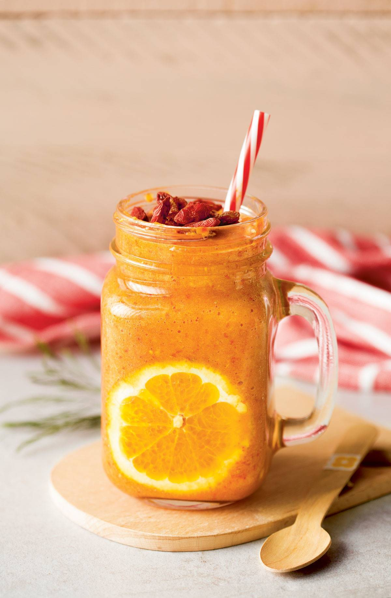
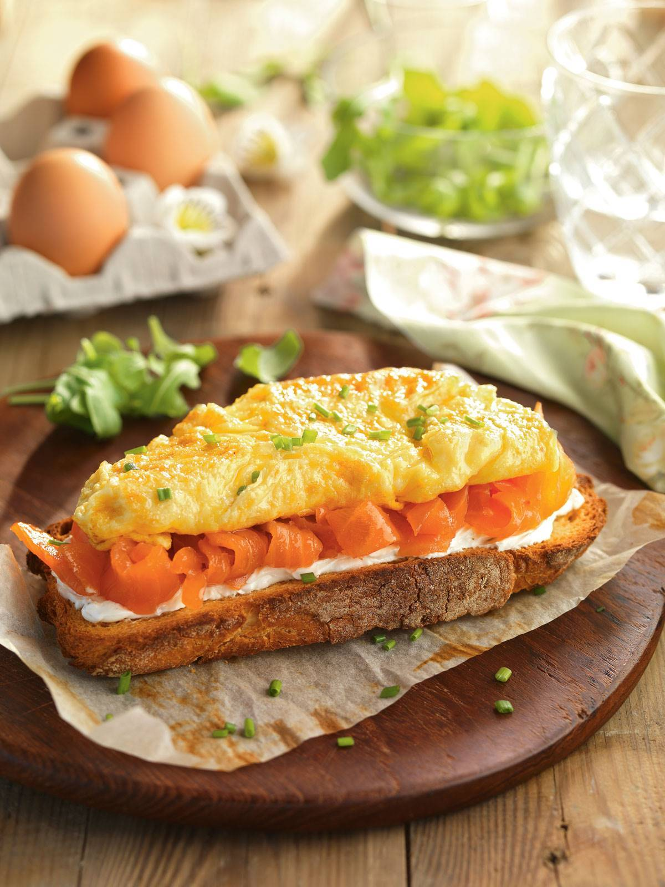
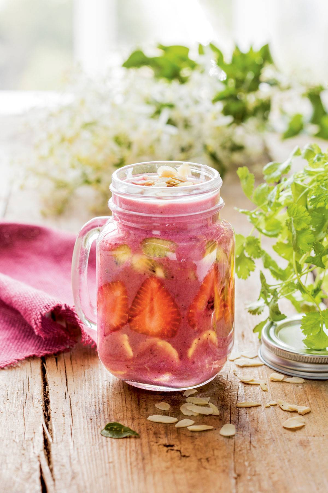
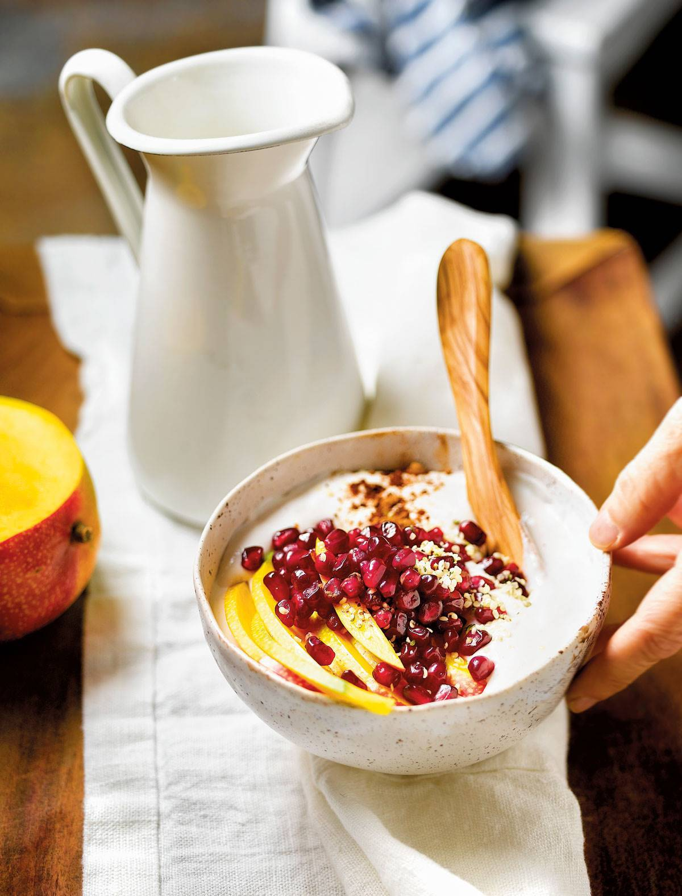
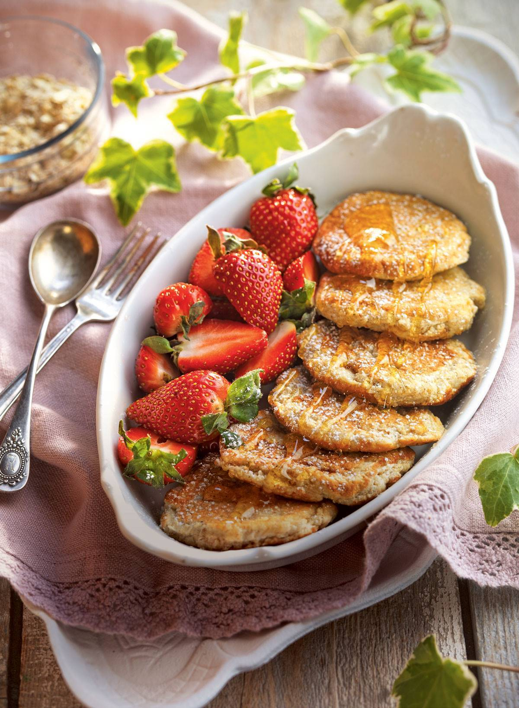
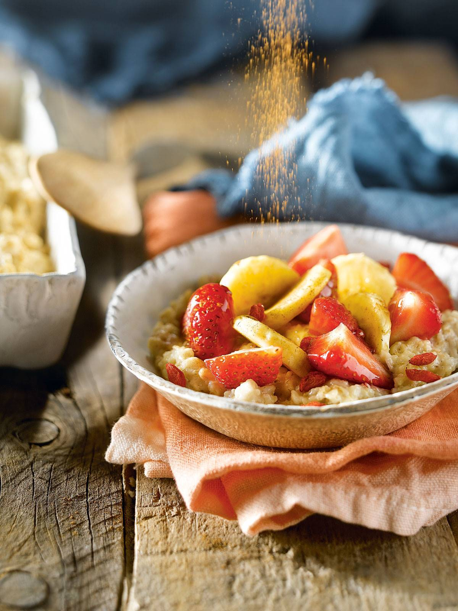

menu de desayuno sano
SMOOTHIE DE BAYAS DE GOJI
Las bayas de goji tienen un alto contenido de antioxidantes, que ayuda a fortalecer el sistema inmunológico y además previene enfermedades cardiovasculares. Una de las formas más fáciles de consumir bayas de goji es a través de smoothies o productos lácteos.
precio: $9.000
TORTITAS DE AVENA CON PLÁTANO

A los niños les encantan las tortitas. Además es una receta muy divertida de hacer con ellos, y de prepararles a modo de desayuno. Para que sea un desayuno sano para niños se puede acudir a cereales como la avena, menos azúcar y más fruta.
precio: $6.900
TOSTADA DE TORTILLA Y SALMÓN
Otra receta que podemos hacer con huevo es una tortilla. Es un desayuno sano y rápido de hacer, incluso para los niños. Para los adultos se puede hacer una versión más elaborada con una tostada, y salmón.
precio: $5.500
SMOOTHIE DE AÇAI
El açai es un fruto pequeño y de color morado, que se ha puesto muy de moda últimamente. Este pequeño fruto procedente de Brasil tiene multitud de antioxidantes, proteínas y hasta 16 aminoácidos. Pero lo mejor de todo es que es un desayuno saludable, ¡y está delicioso!
precio: $7.600
YOGUR DE COCO CON GRANADA
Si a primera hora prefieres algo más fresco, puedes optar por un yogur. Para hacerlo más sano, puedes hacer el yogur de forma casera. Tiempo de preparación
precio: $5.900
SÁNDWICH DE VERDURAS A LA PLANCHA

Este desayuno sano es perfecto si sabes que vas a almorzar tarde
precio: $5.000
TORTITAS DE CLARAS CON FRESAS
precio: $10.000
PORRIDGE DE FRESAS Y PLÁTANO CON BAYAS DE GOJI
El porridge o las gachas de avena son un desayuno saludable y muy proteico. Si vas a hacer ejercicio posteriormente, este desayuno es perfecto. También para el invierno es una de las opciones ideales para tomar un desayuno saludable y caliente.